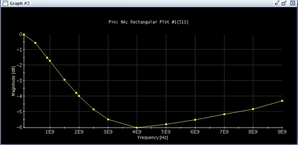

Rectangular Plot
Given a trace in a Smith Chart, you can alternatively view the reflection coefficient data in a rectangular plot in the form of magnitude [dB] versus frequency [Hz] if you are not interested in the phase information. This new User Defined Function (UDF) can be accessed via right-click shortcut menu Analysis ->Show Rectangular Plot. If there are multiple traces in the Smith Chart a dialog box will be displayed which allows you to select the target trace.
Example
The following picture illustrates an S-Parameter rectangular plot in the Smith Chart Tool.

Functional changes
- Introduced in SmarTest 7.0.3